Subtitle + watermark matched3 个 GT 全部命中，覆盖顶部字幕和底部手写水印，min IoU 0.71。
统一使用当前 held-out split 和 GT=200 口径，评估 overlay recall、clean false positive、类型召回和阈值收益，并补充官方预训练 baseline、V4-V14 训练结果。
当前主表统一使用最新 checked-in label：work/ppocr_business_split_synth_v3/labels/test_business.txt。该口径下 test images 为 134，GT boxes 为 200，clean images 为 25。Postprocess: thresh=0.15, box_thresh=0.40, unclip_ratio=1.8. Match: polygon IoU >= 0.50.
reports/ppocrv6_official_pretrained_baseline_2026-06-29.md 是旧 work/business_benchmark 口径，不能直接比较；下表的 official pretrained 行是 2026-07-06 在当前 GT=200 held-out split 上重跑的同口径结果。| Model | Pred | TP | FP | FN | Precision | Recall | HMean/F1 | Clean FP images | Watermark recall | Readout |
|---|---|---|---|---|---|---|---|---|---|---|
| V1 continue | 232 | 188 | 44 | 12 | 81.03% | 94.00% | 87.04% | 4/25 (16.00%) | 87.88% (58/66) | 当前最佳主模型 |
| Official pretrained | 384 | 183 | 201 | 17 | 47.66% | 91.50% | 62.67% | 11/25 (44.00%) | 81.82% (54/66) | 文字先验强，但 clean/native 误检多 |
| V4 best | 260 | 178 | 82 | 22 | 68.46% | 89.00% | 77.39% | 12/25 (48.00%) | 90.91% (60/66) | watermark 高，但整体 recall/FP 明显差 |
| V5 best | 240 | 186 | 54 | 14 | 77.50% | 93.00% | 84.55% | 5/25 (20.00%) | 84.85% (56/66) | 比 V4 稳定，但仍低于 V1 |
| V6 best | 230 | 183 | 47 | 17 | 79.57% | 91.50% | 85.12% | 4/25 (16.00%) | 81.82% (54/66) | 水印专项训练退化 |
| V7 best | 230 | 187 | 43 | 13 | 81.30% | 93.50% | 86.98% | 4/25 (16.00%) | 86.36% (57/66) | 修复 V6 退化，接近但未超过 V1 |
| V7 latest | 231 | 186 | 45 | 14 | 80.52% | 93.00% | 86.31% | 4/25 (16.00%) | 83.33% (55/66) | 不如 V7 best |
| V8 best | 230 | 184 | 46 | 16 | 80.00% | 92.00% | 85.58% | 4/25 (16.00%) | 83.33% (55/66) | logo/text watermark 合成后整体和水印 recall 都退化 |
| V8 latest | 231 | 185 | 46 | 15 | 80.09% | 92.50% | 85.85% | 4/25 (16.00%) | 83.33% (55/66) | 仍低于 V1，不选 |
| V9 best | 235 | 188 | 47 | 12 | 80.00% | 94.00% | 86.44% | 5/25 (20.00%) | 87.88% (58/66) | 电商水印合成后打平 V1，但 FP 略高 |
| V9 latest | 233 | 188 | 45 | 12 | 80.69% | 94.00% | 86.84% | 4/25 (16.00%) | 87.88% (58/66) | 打平 V1，但 precision/F1 仍略低 |
| V10 latest | 234 | 188 | 46 | 12 | 80.34% | 94.00% | 86.64% | 4/25 (16.00%) | 87.88% (58/66) | targeted watermark 合成未带来 recall 收益，FP 略高 |
| V11 best | 230 | 188 | 42 | 12 | 81.74% | 94.00% | 87.44% | 4/25 (16.00%) | 87.88% (58/66) | group watermark 合成未提 recall，但 FP 最少 |
| V11 latest | 230 | 188 | 42 | 12 | 81.74% | 94.00% | 87.44% | 4/25 (16.00%) | 87.88% (58/66) | 与 V11 best 一致，precision/F1 当前最好 |
| V12 best | 233 | 188 | 45 | 12 | 80.69% | 94.00% | 86.84% | 4/25 (16.00%) | 87.88% (58/66) | 针对 FN 合成未解决 8 个 watermark FN |
| V12 latest | 232 | 188 | 44 | 12 | 81.03% | 94.00% | 87.04% | 4/25 (16.00%) | 87.88% (58/66) | 整体打平 V1，clean FP boxes 略少 |
| V13-A best | 235 | 187 | 48 | 13 | 79.57% | 93.50% | 85.98% | 6/25 (24.00%) | 86.36% (57/66) | 真实水印适配未超过 V1 |
| V13-A latest | 247 | 188 | 59 | 12 | 76.11% | 94.00% | 84.12% | 6/25 (24.00%) | 87.88% (58/66) | 召回打平 V1，但 FP 明显增加 |
| V13-B best | 233 | 189 | 44 | 11 | 81.12% | 94.50% | 87.30% | 5/25 (20.00%) | 89.39% (59/66) | 当前稳定候选；整体及水印各多命中 1 个 |
| V13-B latest | 245 | 189 | 56 | 11 | 77.14% | 94.50% | 84.94% | 5/25 (20.00%) | 89.39% (59/66) | 召回与 best 相同，但 FP 更多 |
| V14 best (epoch 3) | 234 | 189 | 45 | 11 | 80.77% | 94.50% | 87.10% | 5/25 (20.00%) | 89.39% (59/66) | 组合水印 probe 未提升业务召回，FP 多 1 个 |
V1 在 box_thresh=0.15~0.40 的 TP 均为 188；由于当前 GT=200，recall 为 94.00%。0.45 开始掉到 93.00%。绿色行是当前推荐工作点。
| box_thresh | Precision | Recall | Miss | HMean | Pred | TP | FP | FN | Clean FP images | Clean FP boxes/image |
|---|---|---|---|---|---|---|---|---|---|---|
| 0.15 | 0.6643 | 0.9400 | 6.00% | 0.7785 | 283 | 188 | 95 | 12 | 6/25 (24.00%) | 0.40 |
| 0.20 | 0.6738 | 0.9400 | 6.00% | 0.7850 | 279 | 188 | 91 | 12 | 6/25 (24.00%) | 0.40 |
| 0.25 | 0.7121 | 0.9400 | 6.00% | 0.8103 | 264 | 188 | 76 | 12 | 6/25 (24.00%) | 0.36 |
| 0.30 | 0.7550 | 0.9400 | 6.00% | 0.8374 | 249 | 188 | 61 | 12 | 6/25 (24.00%) | 0.32 |
| 0.35 | 0.7866 | 0.9400 | 6.00% | 0.8565 | 239 | 188 | 51 | 12 | 4/25 (16.00%) | 0.20 |
| 0.40 | 0.8103 | 0.9400 | 6.00% | 0.8704 | 232 | 188 | 44 | 12 | 4/25 (16.00%) | 0.20 |
| 0.45 | 0.8230 | 0.9300 | 7.00% | 0.8732 | 226 | 186 | 40 | 14 | 4/25 (16.00%) | 0.16 |
box_thresh=0.40。在当前 held-out test 上 recall 为 94.00%，miss rate 6.00%，precision 为 81.03%，clean FP 为 4/25。下表补充 official pretrained 和所有有类型拆分结果的 V4-V14。V13-B 在冻结测试集多命中 1 个 watermark，成为当前稳定候选；V13-A 和 V14 均未超过 V13-B。
| Model | title_text | watermark | subtitle | sticker | product_label | screen_ui |
|---|---|---|---|---|---|---|
| V1 continue | 100.00% (87/87) | 87.88% (58/66) | 96.77% (30/31) | 81.82% (9/11) | 100.00% (4/4) | 0.00% (0/1) |
| Official pretrained | 96.55% (84/87) | 81.82% (54/66) | 96.77% (30/31) | 90.91% (10/11) | 100.00% (4/4) | 100.00% (1/1) |
| V4 best | 88.51% (77/87) | 90.91% (60/66) | 93.55% (29/31) | 63.64% (7/11) | 100.00% (4/4) | 100.00% (1/1) |
| V5 best | 100.00% (87/87) | 84.85% (56/66) | 96.77% (30/31) | 81.82% (9/11) | 100.00% (4/4) | 0.00% (0/1) |
| V6 best | 98.85% (86/87) | 81.82% (54/66) | 96.77% (30/31) | 81.82% (9/11) | 100.00% (4/4) | 0.00% (0/1) |
| V7 best | 100.00% (87/87) | 86.36% (57/66) | 96.77% (30/31) | 81.82% (9/11) | 100.00% (4/4) | 0.00% (0/1) |
| V7 latest | 100.00% (87/87) | 83.33% (55/66) | 96.77% (30/31) | 90.91% (10/11) | 100.00% (4/4) | 0.00% (0/1) |
| V8 best | 98.85% (86/87) | 83.33% (55/66) | 96.77% (30/31) | 81.82% (9/11) | 100.00% (4/4) | 0.00% (0/1) |
| V8 latest | 100.00% (87/87) | 83.33% (55/66) | 96.77% (30/31) | 81.82% (9/11) | 100.00% (4/4) | 0.00% (0/1) |
| V9 best | 100.00% (87/87) | 87.88% (58/66) | 96.77% (30/31) | 81.82% (9/11) | 100.00% (4/4) | 0.00% (0/1) |
| V9 latest | 100.00% (87/87) | 87.88% (58/66) | 96.77% (30/31) | 81.82% (9/11) | 100.00% (4/4) | 0.00% (0/1) |
| V10 best | 100.00% (87/87) | 86.36% (57/66) | 96.77% (30/31) | 81.82% (9/11) | 100.00% (4/4) | 0.00% (0/1) |
| V10 latest | 100.00% (87/87) | 87.88% (58/66) | 96.77% (30/31) | 81.82% (9/11) | 100.00% (4/4) | 0.00% (0/1) |
| V11 best | 100.00% (87/87) | 87.88% (58/66) | 96.77% (30/31) | 81.82% (9/11) | 100.00% (4/4) | 0.00% (0/1) |
| V11 latest | 100.00% (87/87) | 87.88% (58/66) | 96.77% (30/31) | 81.82% (9/11) | 100.00% (4/4) | 0.00% (0/1) |
| V12 best | 100.00% (87/87) | 87.88% (58/66) | 96.77% (30/31) | 81.82% (9/11) | 100.00% (4/4) | 0.00% (0/1) |
| V12 latest | 100.00% (87/87) | 87.88% (58/66) | 96.77% (30/31) | 81.82% (9/11) | 100.00% (4/4) | 0.00% (0/1) |
| V13-A best | 100.00% (87/87) | 86.36% (57/66) | 96.77% (30/31) | 81.82% (9/11) | 100.00% (4/4) | 0.00% (0/1) |
| V13-A latest | 100.00% (87/87) | 87.88% (58/66) | 96.77% (30/31) | 81.82% (9/11) | 100.00% (4/4) | 0.00% (0/1) |
| V13-B best | 100.00% (87/87) | 89.39% (59/66) | 96.77% (30/31) | 81.82% (9/11) | 100.00% (4/4) | 0.00% (0/1) |
| V13-B latest | 100.00% (87/87) | 89.39% (59/66) | 96.77% (30/31) | 81.82% (9/11) | 100.00% (4/4) | 0.00% (0/1) |
| V14 best (epoch 3) | 100.00% (87/87) | 89.39% (59/66) | 96.77% (30/31) | 81.82% (9/11) | 100.00% (4/4) | 0.00% (0/1) |
V14 从 V13-B best 启动，使用 2,000 张隔离 probe 数据训练 3 个 epoch，其中组合水印样本 500 张，学习率 3e-7，共 189 次更新。该实验用于验证“头像/图标 + 多行文字”能否形成一个完整检测单元，不改变冻结业务评估标签。
| Model | Canonical recall | V4 dev recall | V4 clean FP images | Synthetic full-box recall | Coverage >= 80% | Mean union coverage | TH20 composite |
|---|---|---|---|---|---|---|---|
| V13-B best | 94.50% (189/200) | 66.45% (103/155) | 23/43 (53.49%) | 31.50% (63/200) | 30.50% (61/200) | 63.62% | 0/4 |
| V14 epoch 1 | 94.50% (189/200) | 65.81% (102/155) | 25/43 (58.14%) | 33.00% (66/200) | 32.00% (64/200) | 64.63% | 0/4 |
| V14 epoch 2 | 94.50% (189/200) | 65.81% (102/155) | 24/43 (55.81%) | 33.00% (66/200) | 32.00% (64/200) | 64.76% | 0/4 |
| V14 best (epoch 3) | 94.50% (189/200) | 65.81% (102/155) | 25/43 (58.14%) | 34.50% (69/200) | 32.50% (65/200) | 65.22% | 0/4 |
V8-V12 同时补充了 box_thresh=0.25 结果，用来判断“降低阈值是否能找回水印”。结论是 V9 低阈值只多召回 1 个 watermark，但 FP 大幅增加；V10/V11/V12 低阈值没有新增 TP，只增加 FP；V8 低阈值仍低于 V1。
| Model | box_thresh | Pred | TP | FP | FN | Precision | Recall | F1 | Clean FP images | Watermark recall | Readout |
|---|---|---|---|---|---|---|---|---|---|---|---|
| V8 best | 0.25 | 263 | 185 | 78 | 15 | 70.34% | 92.50% | 79.91% | 6/25 (24.00%) | 84.85% (56/66) | 仍低于 V1，且 FP 增加 |
| V8 latest | 0.25 | 267 | 186 | 81 | 14 | 69.66% | 93.00% | 79.66% | 6/25 (24.00%) | 84.85% (56/66) | 仍低于 V1，且 FP 增加 |
| V9 best | 0.25 | 292 | 189 | 103 | 11 | 64.73% | 94.50% | 76.83% | 6/25 (24.00%) | 89.39% (59/66) | 只多召回 1 个 watermark，但 FP 翻倍，不推荐 |
| V9 latest | 0.25 | 287 | 189 | 98 | 11 | 65.85% | 94.50% | 77.62% | 6/25 (24.00%) | 89.39% (59/66) | 只多召回 1 个 watermark，但 FP 明显变差 |
| V10 best | 0.25 | 275 | 187 | 88 | 13 | 68.00% | 93.50% | 78.74% | 6/25 (24.00%) | 86.36% (57/66) | 未补回 watermark，FP 增加，不推荐 |
| V10 latest | 0.25 | 278 | 188 | 90 | 12 | 67.63% | 94.00% | 78.66% | 6/25 (24.00%) | 87.88% (58/66) | recall 打平 V1，但 FP 大幅增加 |
| V11 best | 0.25 | 269 | 188 | 81 | 12 | 69.89% | 94.00% | 80.17% | 6/25 (24.00%) | 87.88% (58/66) | 无新增 TP，FP 增加 |
| V11 latest | 0.25 | 270 | 188 | 82 | 12 | 69.63% | 94.00% | 80.00% | 6/25 (24.00%) | 87.88% (58/66) | 无新增 TP，FP 增加 |
| V12 best | 0.25 | 294 | 188 | 106 | 12 | 63.95% | 94.00% | 76.11% | 6/25 (24.00%) | 87.88% (58/66) | 无新增 TP，FP 最高 |
| V12 latest | 0.25 | 295 | 188 | 107 | 12 | 63.73% | 94.00% | 75.96% | 6/25 (24.00%) | 87.88% (58/66) | 无新增 TP，FP 最高 |
| Image | Attribution |
|---|---|
test_business/clean/video_029/scene_0002_frame_000136.jpg | tiny_noise_or_texture (native IoU 0.02, native product_label); overlap_native_or_product_text (native IoU 0.35, native product_label) |
test_business/clean/video_029/scene_0004_frame_000324.jpg | visual_unknown_non_native (native IoU 0.00, native -) |
test_business/clean/video_076/scene_0006_frame_000381.jpg | visual_unknown_non_native (native IoU 0.00, native -) |
test_business/clean/video_076/scene_0006_frame_000402.jpg | visual_unknown_non_native (native IoU 0.00, native -) |
当前 GT=200 口径下，V1 continue 在推荐工作点共漏检 12 个 instance。按类型召回行整理如下：title_text、product_label 无漏检；主要漏检集中在 watermark。
| text_type | Recall | TP / GT | FN | Readout |
|---|---|---|---|---|
| title_text | 100.00% | 87 / 87 | 0 | 无漏检 |
| watermark | 87.88% | 58 / 66 | 8 | 低对比、小号、贴近复杂背景是主要问题 |
| subtitle | 96.77% | 30 / 31 | 1 | 1 个细字/低对比 subtitle 未达到 IoU 0.50 |
| sticker | 81.82% | 9 / 11 | 2 | 图形贴纸文字被部分检测，但框不够覆盖 |
| product_label | 100.00% | 4 / 4 | 0 | 无漏检 |
| screen_ui | 0.00% | 0 / 1 | 1 | 唯一 UI 水印未有效匹配 |
下面是完整 FN 明细。pred boxes 是该帧 V1 输出框数量；best IoU 是该 GT 与所有预测框的最高 IoU，低于 0.50 计为漏检。pred boxes=0 表示该帧完全没有预测框。
| Image | text_type | pred boxes | best IoU | text |
|---|---|---|---|---|
test_business/overlay/video_011/scene_0002_frame_000193.jpg | watermark | 1 | 0.13 | Video by Cece Dini |
test_business/overlay/video_014/scene_0001_frame_000030.jpg | watermark | 2 | 0.00 | NVCASE |
test_business/overlay/video_014/scene_0002_frame_000209.jpg | watermark | 4 | 0.12 | NVCASES |
test_business/overlay/video_031/scene_0006_frame_000293.jpg | subtitle | 3 | 0.39 | teksturnya lembut dan nggak lengket |
test_business/overlay/video_033/scene_0001_frame_000029.jpg | watermark | 3 | 0.45 | video milik @titin suhartinn |
test_business/overlay/video_033/scene_0002_frame_000100.jpg | watermark | 3 | 0.29 | video milik @titin suhartinn |
test_business/overlay/video_033/scene_0003_frame_000145.jpg | watermark | 0 | 0.00 | video milik @titin suhartinn |
test_business/overlay/video_033/scene_0005_frame_000269.jpg | watermark | 4 | 0.00 | video milik @titin suhartini |
test_business/overlay/video_033/scene_0007_frame_000376.jpg | watermark | 3 | 0.00 | video milik @titin suhartinn |
test_business/overlay/video_056/scene_0001_frame_000030.jpg | sticker | 7 | 0.34 | #DISKON RAGUN SHOPEE |
test_business/overlay/video_056/scene_0002_frame_000151.jpg | sticker | 5 | 0.36 | #DISKON RAGUN SHOPEE |
test_business/overlay/video_056/scene_0003_frame_000240.jpg | screen_ui | 5 | 0.11 | ShopeeVideo |
以下 case 使用推荐工作点 box_thresh=0.40 汇报。绿色是真实标签，橙色是 V1 continue 预测框；若 miss 图里没有橙色框，表示该帧没有预测框。


以下是 V13-B best 相比 V1 continue 新增命中的 GT。绿色是 GT，橙色是 V1 continue，蓝色是 V13-B best。canonical case 属于主 test；V4 dev case 仅用于补充泛化观察，不改变主 test 指标。
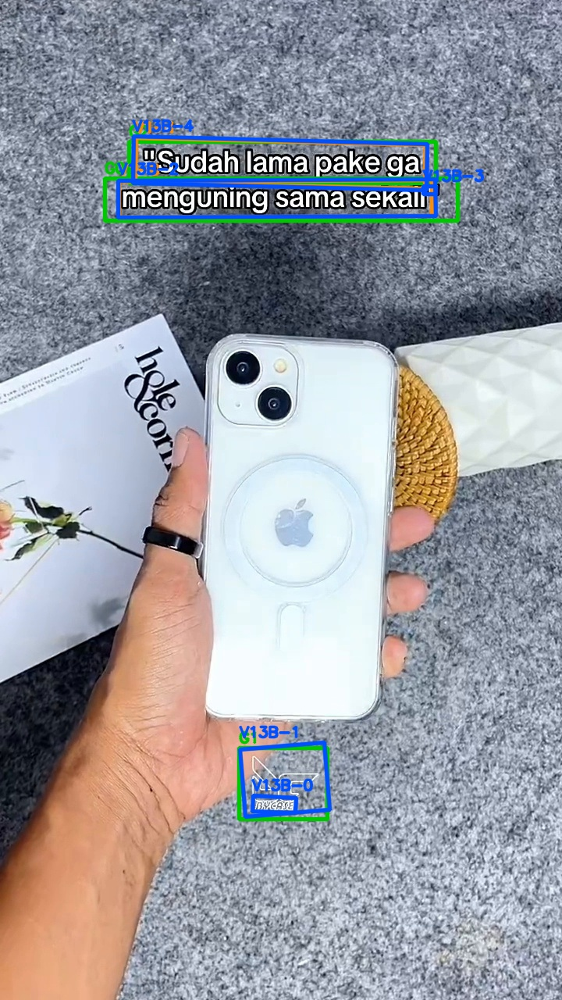
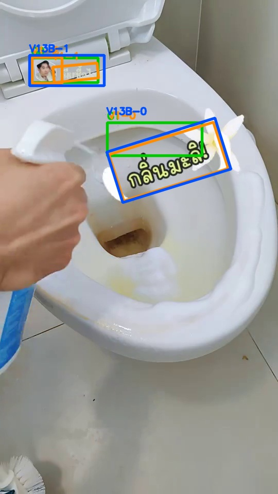
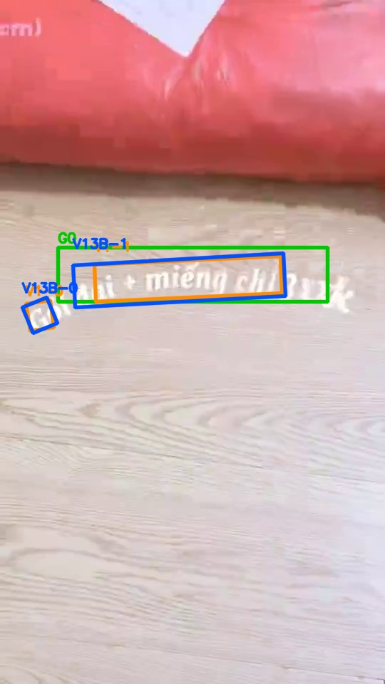
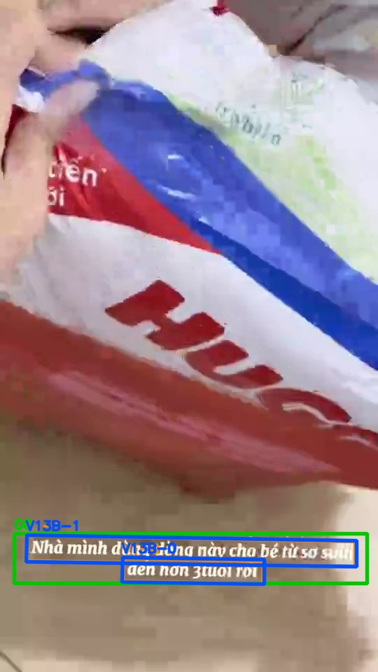
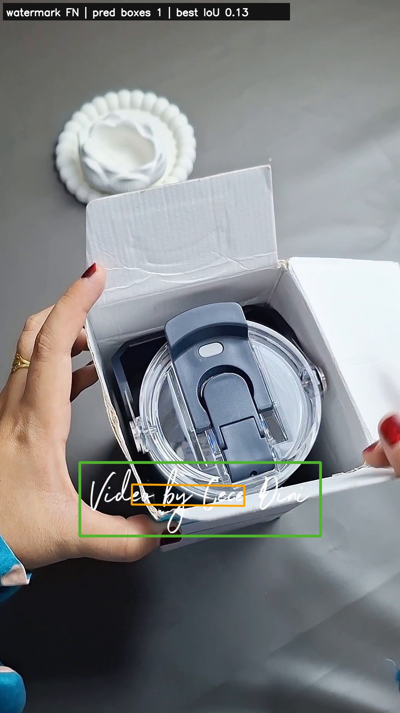
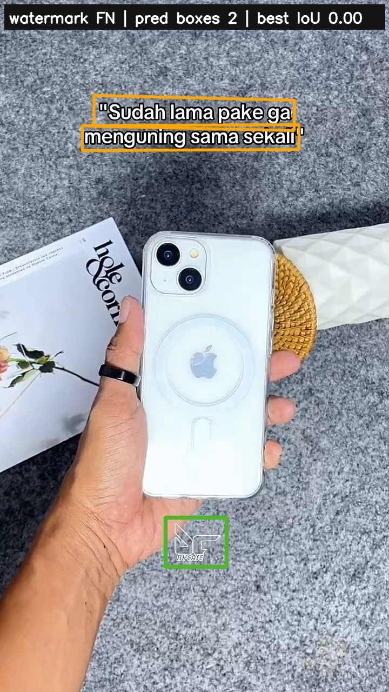
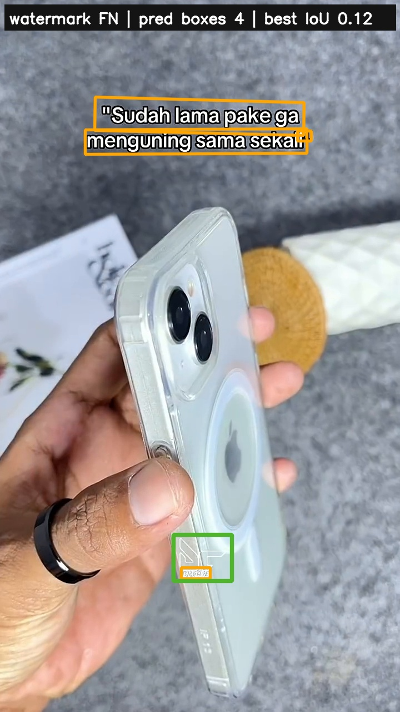
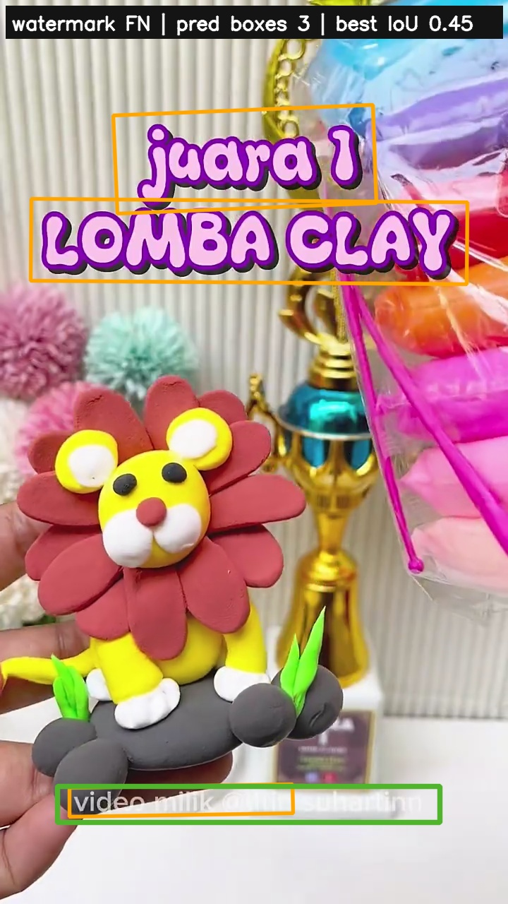
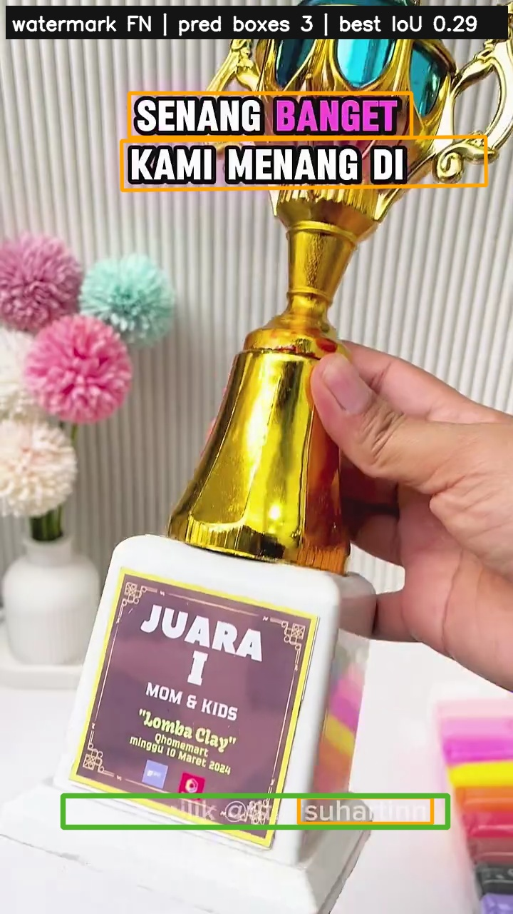
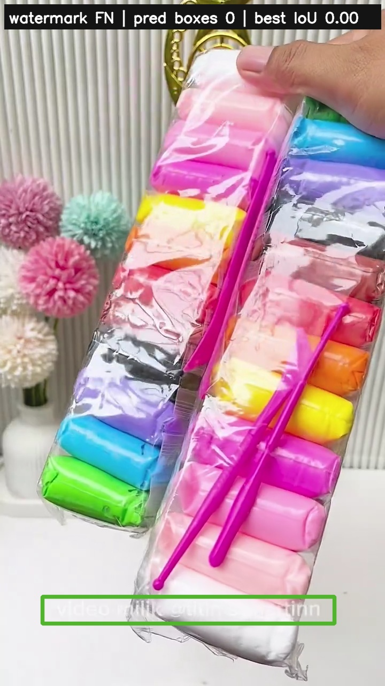
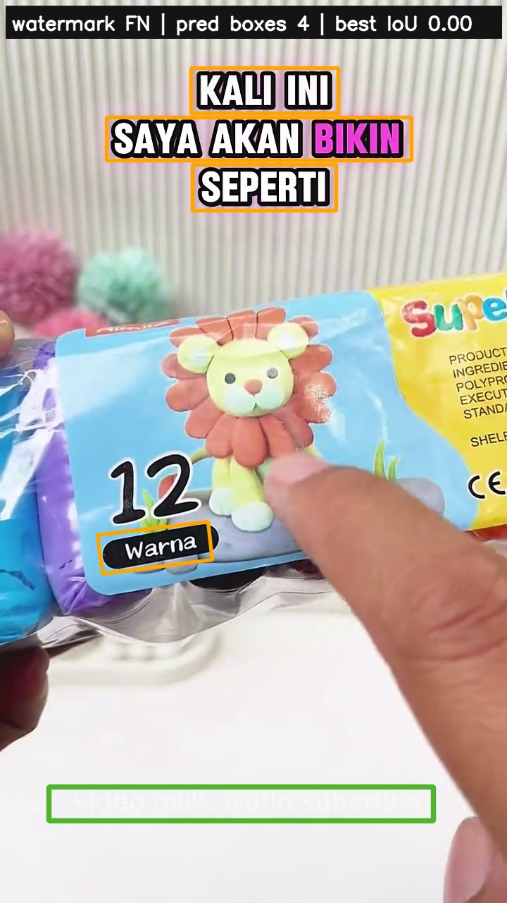
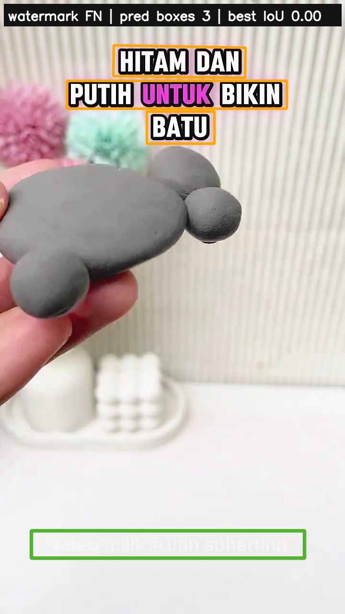
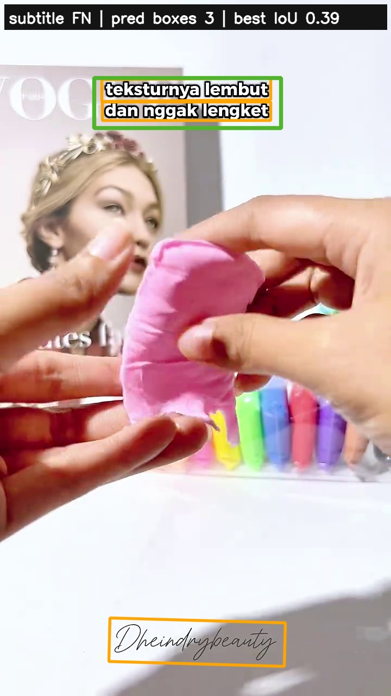
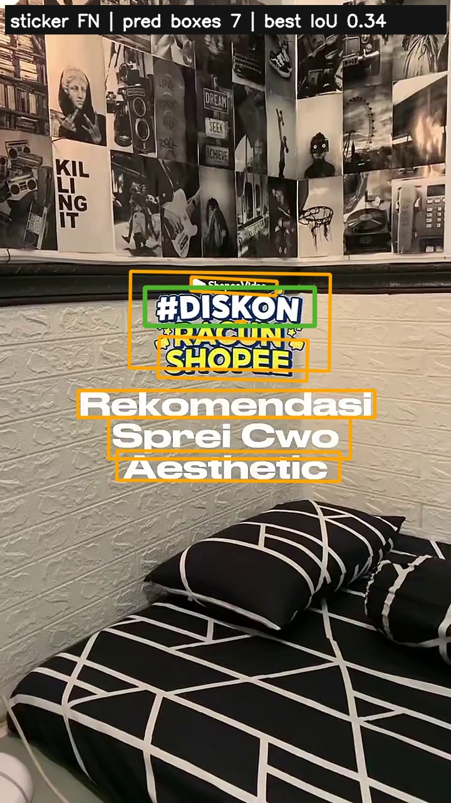
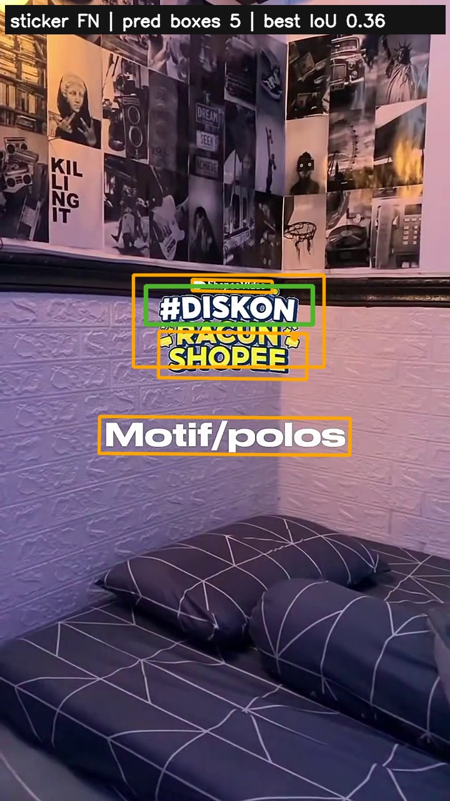
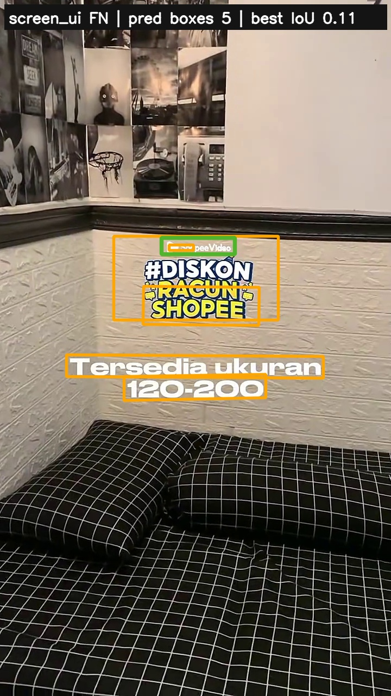


box_thresh=0.40。相较 V1，V13-B 的整体 recall 从 94.00% 提到 94.50%，watermark recall 从 58/66 提到 59/66；代价是 clean FP images 从 4/25 增至 5/25。V13-A 在 V4 dev 略高，但冻结测试集、水印召回和 clean FP 均不如 V13-B。V14 没有解决组合水印完整覆盖问题，不替换 V13-B，也不建议从 V14 继续训练。下一步先做更强的 easy-synthetic overfit 诊断；若完整框 recall 仍无法显著提升，应转向二阶段合框或 YOLO/segmentation 表达组合图形单元。